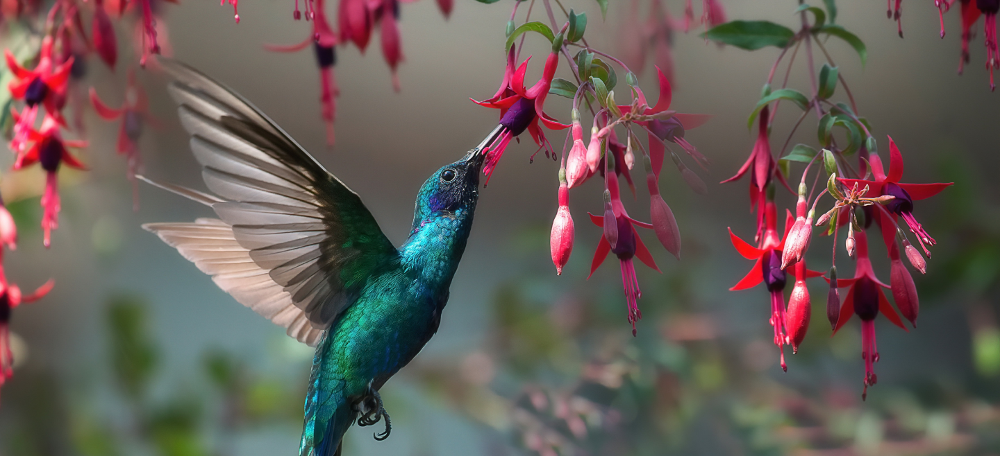
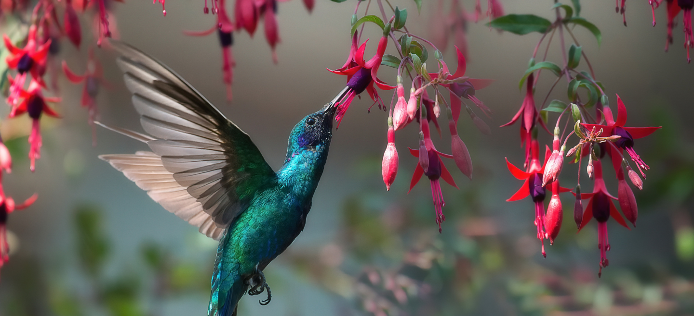

Una especie nativa, especie indígena o autóctona es una especie que pertenece a una región o ecosistema determinados. Su presencia en esa región es el resultado de fenómenos naturales sin intervención humana
Sietevestidos
Tráupido mediano. Gris por encima, canela por debajo con blanco en el vientre y en las puntas de la cola. Toma en cuenta sus largas cejas blancas que se vuelven canela detrás del ojo así como su bigotera blanca. Prefiere áreas arbustivas y bosques abiertos cerca del agua, pero también frecuenta jardines. Emite un canto de tres notas: "tuit tuit-chiu".
Tordo Común
Muy raro en la región, pero común en el Caribe y Sudamérica. Se le encuentra en pastizales abiertos y semiabiertos, a veces asociado con ganado. Se alimenta principalmente en el suelo pero percha fácilmente en arbustos y árboles. El macho es negro-azulado tornasol. La hembra es café grisáceo liso. La forma de su pico negro es una característica clave: es más delgado y agudo que los picos de las otras especies de Tordo.
Cardenal Copete Rojo
Inconfundible con su cresta y garganta rojo brillante que contrastan con su espalda gris y sus partes inferiores blancas. Nota el pico pálido. Usualmente, se ve en el suelo en hábitats semiabiertos, incluyendo zonas agrícolas y áreas urbanas. En la temporada no reproductiva se reúne en grandes bandadas. Su canto son silbidos lentos y melodiosos.
Picaflor Verde
Pequeño colibrí verde encontrado en una gran variedad de hábitats abiertos y semiabiertos, como bordes de bosque, desiertos, sabanas y jardines. Visita bebederos. Su cuerpo es verde iridiscente con bifurcada cola azul oscuro y alas oscuras. Los machos tienen el pico rojo con la punta negra y la garganta azul, mientras que las hembras tienen el vientre blanco, máscara negra y pico negro con base roja.
 
